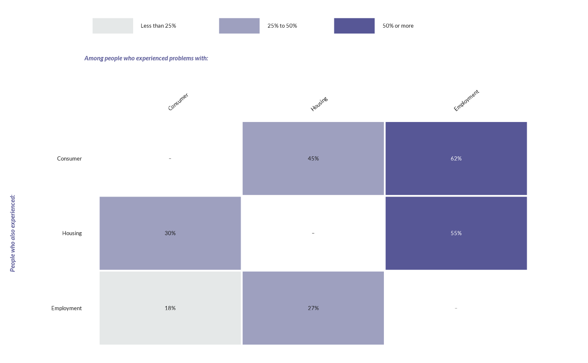

![[Experimental]](figures/lifecycle-experimental.svg)
wjp_heatmap() draws a matrix of colored cells (e.g., the share of people
with one problem who also had another), with the printed value of each cell
and the column labels at the top.
Usage
wjp_heatmap(
data,
x,
y,
fill,
labels = NULL,
x_order = NULL,
y_order = NULL,
cvec = NULL,
na_fill = "#FFFFFF",
border_color = "#FFFFFF",
label_color = "auto",
x_position = c("top", "bottom"),
x_angle = 40,
legend_position = "top",
border_width = 1.5,
label_size = 9.5,
label_fontface = "plain",
label_dark = "#1A1A1A",
axis_text_size = 10,
axis_text_colour = "#1A1A1A",
x_title = NULL,
y_title = NULL,
title_size = 11,
title_fontface = "bold.italic",
title_colour = "#575796",
legend_text_size = 10,
legend_key_size = NULL,
legend_fontface = "plain",
legend_justification = c("left", "center", "right"),
cell_size = NULL,
margins = c(9, 41, 9, 9),
ptheme = WJP_theme()
)Arguments
- data
Data frame containing the data to plot.
- x
String. Column name of the variable with the column categories.
- y
String. Column name of the variable with the row categories.
- fill
String. Column name of the variable that sets the cell color (categorical or numeric).
- labels
String. Column name of the variable with the printed values. Default is
NULL(no labels).- x_order, y_order
Character vectors with the order of the columns (left to right) and rows (top to bottom). Default is
NULL(order of first appearance).- cvec
Colors: named by the fill values (categorical fill) or the low and high ends of the scale (numeric fill). Default is
NULL(sequential WJP report colors).- na_fill
String. Color of cells with a missing fill. Default is
"#FFFFFF".- border_color
String. Color of the cell borders. Default is
"#FFFFFF".- label_color
Color of the labels:
"auto"(default; white on dark cells) or one color.- x_position
String. Position of the column labels:
"top"(default) or"bottom".- x_angle
Numeric. Angle of the column labels, in degrees. Default is
40.- legend_position
Legend position:
"top"(default),"bottom","left","right",c(x, y)inside the panel, or"none".- border_width
Numeric. Width of the cell borders, in points. Default is
1.5.- label_size
Numeric. Size of the labels, in points. Default is
9.5.- label_fontface
String. Font face of the labels. Default is
"plain".- label_dark
String. Color of the labels on light cells with
label_color = "auto". Default is"#1A1A1A".- axis_text_size
Numeric. Size of the row and column labels, in points. Default is
10.- axis_text_colour
String. Color of the row and column labels. Default is
"#1A1A1A".- x_title, y_title
Strings. Titles of the columns and rows. Default is
NULL(none).- title_size
Numeric. Size of the titles, in points. Default is
11.- title_fontface
String. Font face of the titles. Default is
"bold.italic".- title_colour
String. Color of the titles. Default is
"#575796".- legend_text_size
Numeric. Size of the legend text, in points. Default is
10.- legend_key_size
Numeric. Size of the legend keys, in points. Default is
NULL.- legend_fontface
String. Font face of the legend text. Default is
"plain".- legend_justification
String. Horizontal alignment of a top or bottom legend:
"left"(default),"center", or"right".- cell_size
Numeric. Side of each (square) cell, in points. Default is
NULL(the panel fills the device).- margins
Numeric vector of four margins (top, right, bottom, left), in points. Default is
c(9, 41, 9, 9).- ptheme
ggplot theme to apply. Default is
WJP_theme().
Details
The function expects one row per cell: the column category in x, the row
category in y, and the variable that sets the color in fill. Columns
are drawn from left to right and rows from top to bottom in order of first
appearance, or in the order given by x_order and y_order.
Colors. A categorical fill (character, factor, or logical; e.g.,
bands such as "Less than 25%") uses cvec, a vector of colors named by
the fill values (or given in the order of the levels); by default a
sequential ramp from "#E5E8E8" to "#575796" over the levels, in factor
order or order of first appearance. A numeric fill uses a sequential
scale between cvec[1] and cvec[2] (see scale_fill_wjp_seq()). Cells
with a missing fill are drawn in na_fill. With label_color = "auto",
labels on dark cells are white.
Labels. The labels column is printed as given (e.g., "62%",
"N/A", or a dash on the diagonal). Without it, no value is printed.
Size. With cell_size, cells are squares of that many points and
the chart has a definite size for wjp_save(); otherwise the panel fills
the device.
Examples
# Always load the WJP fonts
wjp_fonts()
# Share of people with a problem (columns) who also had another (rows)
# (fictional data)
problems <- c("Consumer", "Housing", "Employment")
cooc <- expand.grid(column = problems, row = problems, stringsAsFactors = FALSE)
cooc$value <- c(NA, 45, 62, 30, NA, 55, 18, 27, NA)
cooc$band <- cut(cooc$value, c(-Inf, 25, 50, Inf), right = FALSE,
labels = c("Less than 25%", "25% to 50%", "50% or more"))
cooc$text <- ifelse(is.na(cooc$value), "–", paste0(cooc$value, "%"))
wjp_heatmap(
cooc,
x = "column",
y = "row",
fill = "band",
labels = "text",
x_title = "Among people who experienced problems with:",
y_title = "People who also experienced:"
)
